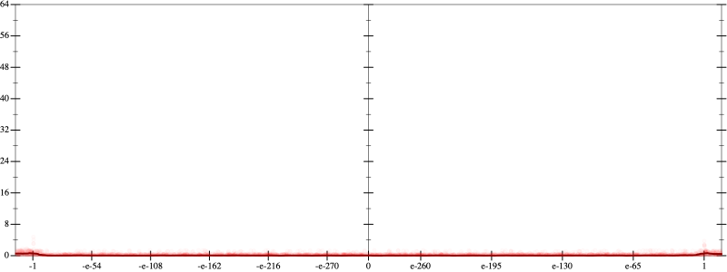
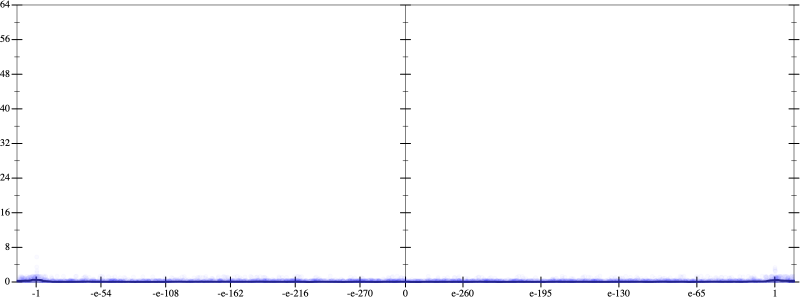
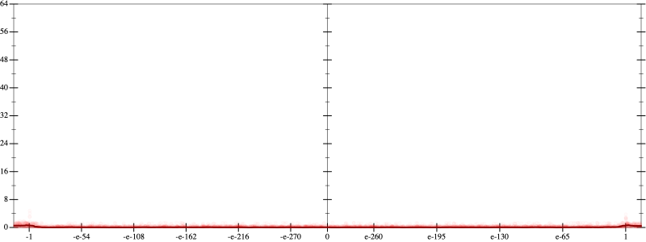
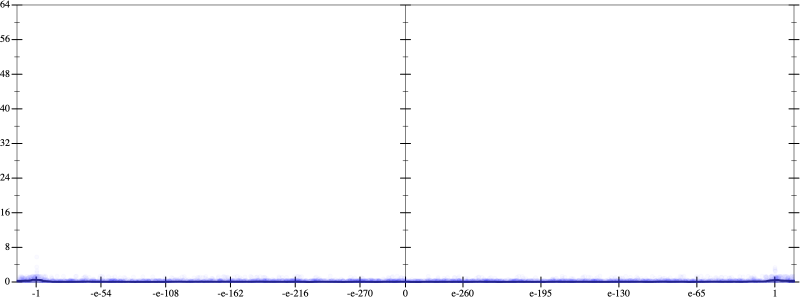

Initial program 0.1
\[\left(1.875 \cdot x + -8.75 \cdot \left(\left(x \cdot x\right) \cdot x\right)\right) + 7.875 \cdot \left(\left(\left(\left(x \cdot x\right) \cdot x\right) \cdot x\right) \cdot x\right)\]
- Using strategy
rm Applied add-cbrt-cube0.1
\[\leadsto \left(1.875 \cdot x + -8.75 \cdot \left(\left(x \cdot x\right) \cdot x\right)\right) + \color{blue}{\sqrt[3]{\left(\left(7.875 \cdot \left(\left(\left(\left(x \cdot x\right) \cdot x\right) \cdot x\right) \cdot x\right)\right) \cdot \left(7.875 \cdot \left(\left(\left(\left(x \cdot x\right) \cdot x\right) \cdot x\right) \cdot x\right)\right)\right) \cdot \left(7.875 \cdot \left(\left(\left(\left(x \cdot x\right) \cdot x\right) \cdot x\right) \cdot x\right)\right)}}\]
Applied simplify0.1
\[\leadsto \left(1.875 \cdot x + -8.75 \cdot \left(\left(x \cdot x\right) \cdot x\right)\right) + \sqrt[3]{\color{blue}{{\left(\left(7.875 \cdot x\right) \cdot \left(\left(x \cdot x\right) \cdot \left(x \cdot x\right)\right)\right)}^{3}}}\]
Taylor expanded around 0 31.5
\[\leadsto \left(1.875 \cdot x + -8.75 \cdot \left(\left(x \cdot x\right) \cdot x\right)\right) + \color{blue}{e^{\log 7.875 + 5 \cdot \log x}}\]
Applied simplify0.1
\[\leadsto \color{blue}{\left({x}^{5} \cdot 7.875 + \left(x \cdot x\right) \cdot \left(-8.75 \cdot x\right)\right) + 1.875 \cdot x}\]
 
